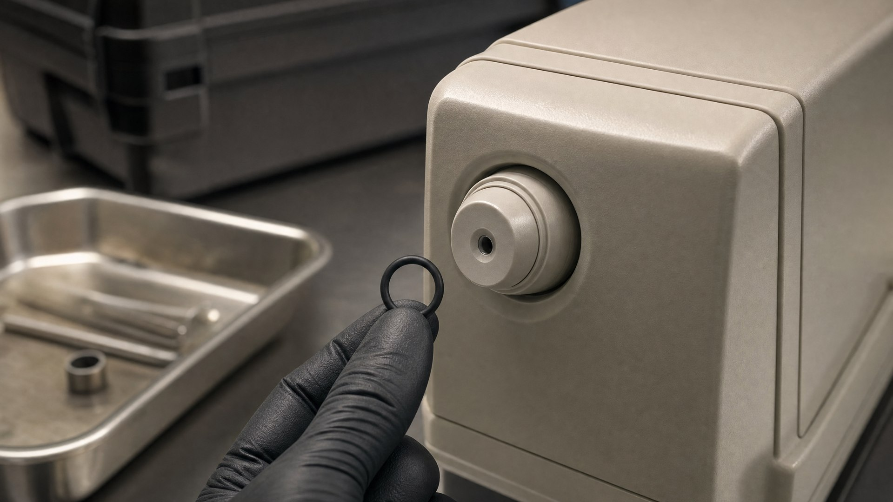

Intoxilyzer 8000 O-Ring Repair in Florida

On August 13, 2026, a three-judge panel in Duval County looked at a rubber ring that costs about a dollar and reached a conclusion that could ripple through thousands of Florida DUI cases: when state inspectors swap out the O-rings inside an Intoxilyzer 8000, that is a repair — and Florida law says repairs belong to authorized repair facilities, which the state conceded its own agencies are not.
One Rubber Ring, Thousands of Cases: The Duval County Ruling
The ruling grew out of a Duval County DUI case stemming from a 2025 arrest on Beach Boulevard in Jacksonville. The defense zeroed in on something that had been hiding in plain sight for years: during the annual inspections that keep each Intoxilyzer 8000 certified, inspectors routinely pull out the machine's small rubber O-rings and install new ones. The panel concluded that replacing those internal parts is not routine maintenance — it is a repair. And critically, the state conceded that neither the Florida Department of Law Enforcement (FDLE) nor the Jacksonville Sheriff's Office is an authorized repair facility under Florida's breath-test rules.
Jacksonville's WOKV and Action News Jax both reported that the challenge could put thousands of DUI cases in jeopardy, because it targets how these machines are maintained statewide — not a single malfunctioning unit. If that framing sounds familiar, it should: the Intoxilyzer 8000 has survived years of legal attacks, a history we covered in how Florida's breath test machine became untouchable. This challenge is different because it does not ask whether the machine works. It asks whether the state followed its own rules for keeping it working.
Repair vs. Maintenance: Why the Label Matters Under Florida's Breath-Test Rules
Florida's implied-consent statute, F.S. 316.1932, says a breath test is valid only if it is performed substantially according to methods approved by FDLE. Those methods live in Florida Administrative Code Chapter 11D-8, which sets up a two-layer compliance regime: monthly agency inspections by a permitted inspector (typically a sheriff's office employee) and an annual department inspection by FDLE. The rules also distinguish that inspection work from repairs, which must go through authorized repair facilities.
The payoff for the state, when it follows those rules, is enormous. Under F.S. 316.1934, a breath result of .08 or above obtained in substantial compliance with the approved methods gives prosecutors a presumption of impairment — a near-automatic path to proving the DUI charge under F.S. 316.193. The Florida Supreme Court built that framework across three decisions: State v. Bender (1980) held that breath results and the statutory presumptions are available only upon compliance with the implied-consent law and its administrative rules; Robertson v. State (1992) held that without compliance, the state must instead prove the old-fashioned scientific predicate — test reliability, a qualified operator, and expert testimony — case by case; and State v. Miles (2000) confirmed that when the administrative rules fail to ensure a reliable result, the shortcut and the presumption disappear.
Why "Repair" Is the Whole Ballgame
If swapping O-rings is maintenance, the state stays in substantial compliance and keeps its .08 presumption. If it is a repair performed by an unauthorized facility, compliance breaks — and under Robertson and Miles, the state loses the shortcut and must prove the reliability of every breath number the hard way, with expert testimony, in every single case.
Four of Five O-Rings: Why This Argument Is Fleet-Wide
What makes this ruling more than a one-machine story is the testimony behind it. According to NewsRadio WIOD's coverage of the decision, FDLE testimony showed that its inspectors routinely replace four of the machine's five O-rings during annual maintenance. That is not a quirk of one Jacksonville instrument — it is standard practice across the fleet of Intoxilyzer 8000s used throughout Florida, including the machines that test drivers arrested in Orlando and Orange County.
The same reporting highlighted a second problem: the Jacksonville Sheriff's Office acknowledged replacing O-rings without keeping records of when the work occurred. From my years as a Florida Highway Patrol trooper, I can tell you the entire breath-testing program is built on documentation — observation periods, inspection logs, certification records. An undocumented parts swap inside an evidentiary instrument is exactly the kind of gap that machine-level data problems tend to hide behind, something we saw firsthand when our Intoxilyzer 8000 data analysis.
What This Means in Discovery: The Paper Trail Behind Every Breath Number
Every Intoxilyzer 8000 in Florida is tracked by serial number, and its inspection and repair history is publicly searchable on FDLE's website. That means a defense attorney can pull the complete paper trail for the specific machine that produced a client's breath number — before ever filing a motion. Compare that to manufacturer-side records: in Ulloa v. CMI, Inc. (2013), the Florida Supreme Court held that subpoenas to the Intoxilyzer's out-of-state manufacturer must go through the cumbersome interstate process of chapter 942. The agency records, by contrast, are sitting in the open.
Records Worth Examining for the Machine in Your Case
- Monthly agency inspection reports filed by the sheriff's office inspector
- Annual department inspection reports from FDLE — where the O-ring replacements happen
- The instrument's repair and maintenance history, tied to its serial number
- Gaps: parts replaced with no corresponding record of when or by whom
Those records feed directly into a motion to suppress the breath result. If you want to understand how that process unfolds in the courtroom, our guide to what to expect at a motion to suppress hearing walks through it step by step.
A Suppressed Breath Test Is Not an Automatic Win
Here is the honest part that headlines skip. As Action News Jax cautioned in its coverage, excluding a breath test does not automatically dismiss a DUI charge. Florida's DUI statute has two prongs: the .08 breath number, and impairment of normal faculties. Take away the number, and prosecutors can still proceed on the officer's observations, body-camera and dash-camera video, driving pattern, and field sobriety exercises — evidence that has its own vulnerabilities, as we've covered in challenging the HGN eye test. Suppression reshapes the case; it does not end it.
Don't Forget the License Suspension
A .08+ breath result also triggers an immediate administrative license suspension under F.S. 322.2615 — a separate proceeding from the criminal case, on a short clock. Machine-compliance challenges can matter in that administrative review hearing too, but only if they are raised in time.
How a Criminal Defense Attorney Can Help
The takeaway for Orlando drivers is the one I used to give at citizens' academies: breath machines are not magic boxes. They are regulated instruments governed by strict compliance rules, and whether those rules were actually followed is a fact question in every Florida DUI case — one that now includes whether the machine's internal parts were replaced by someone authorized to do it. The Duval County ruling is one panel's decision and the fight is far from over, but the maintenance records for the machine that tested you exist, they are searchable, and they deserve a hard look. As a former State Trooper and Deputy Sheriff, I know how these instruments are inspected, how the paperwork is supposed to flow, and where the gaps tend to appear — and how to turn those gaps into leverage.
Facing DUI Charges Backed by a Breath Test?
If a breath-test result is part of your Florida DUI case, request a consultation or call Lotter Law now to have the machine's maintenance and repair records examined.
Contact Lotter Law at 407-500-7000 for a free consultation.

Jeff Lotter
Criminal Defense Attorney | Former State Trooper
Jeff Lotter is an Orlando criminal defense attorney and former Florida Highway Patrol trooper. He uses his law enforcement background to build stronger defenses for clients facing criminal charges.
Related Articles
The Intoxilyzer 9000 Is Coming to Florida. Here's What Other States Have Learned.
The Intoxilyzer 8000: How Florida's Breath Test Machine Became Untouchable
Motion to Suppress: What to Expect at Your Hearing
What happens at a motion to suppress hearing in Florida? Criminal defense attorney explains the process and how illegally obtained evidence …